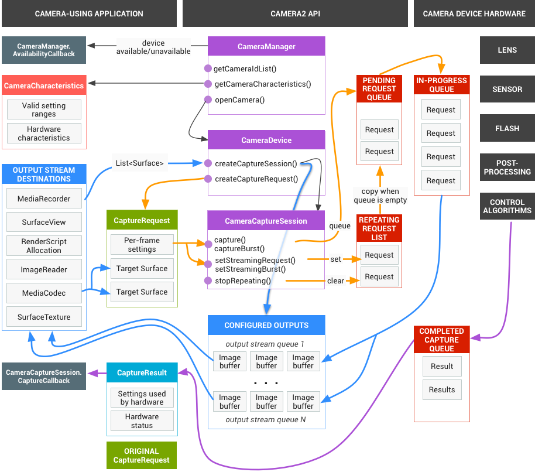
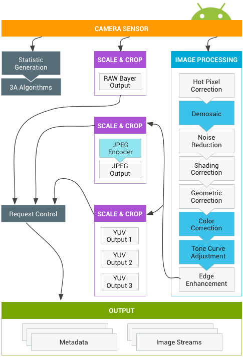

In this document
Requests
The app framework issues requests for captured results to the camera subsystem.
One request corresponds to one set of results. A request encapsulates all
configuration information about the capturing and processing of those results.
This includes things such as resolution and pixel format; manual sensor, lens,
and flash control; 3A operating modes; RAW to YUV processing control; and
statistics generation. This allows for much more control over the results'
output and processing. Multiple requests can be in flight at once, and
submitting requests is non-blocking. And the requests are always processed in
the order they are received.

Figure 1. Camera model
The HAL and camera subsystem
The camera subsystem includes the implementations for components in the camera
pipeline such as the 3A algorithm and processing controls. The camera HAL
provides interfaces for you to implement your versions of these components. To
maintain cross-platform compatibility between multiple device manufacturers and
Image Signal Processor (ISP, or camera sensor) vendors, the camera pipeline
model is virtual and does not directly correspond to any real ISP. However, it
is similar enough to real processing pipelines so that you can map it to your
hardware efficiently. In addition, it is abstract enough to allow for multiple
different algorithms and orders of operation without compromising either
quality, efficiency, or cross-device compatibility.
The camera pipeline also supports triggers that the app framework can initiate
to turn on things such as auto-focus. It also sends notifications back to the
app framework, notifying apps of events such as an auto-focus lock or errors.

Figure 2. Camera pipeline
Please note, some image processing blocks shown in the diagram above are not well-defined in the initial release.The camera pipeline makes the following assumptions:
- RAW Bayer output undergoes no processing inside the ISP.
- Statistics are generated based off the raw sensor data.
- The various processing blocks that convert raw sensor data to YUV are in an arbitrary order.
- While multiple scale and crop units are shown, all scaler units share the output region controls (digital zoom). However, each unit may have a different output resolution and pixel format.
Summary of API use
This is a brief summary of the steps for using the Android camera API. See the
Startup and expected operation sequence section for a detailed breakdown of
these steps, including API calls.
- Listen for and enumerate camera devices.
- Open device and connect listeners.
- Configure outputs for target use case (such as still capture, recording, etc.).
- Create request(s) for target use case.
- Capture/repeat requests and bursts.
- Receive result metadata and image data.
- When switching use cases, return to step 3.
HAL operation summary
- Asynchronous requests for captures come from the framework.
- HAL device must process requests in order. And for each request, produce output result metadata, and one or more output image buffers.
- First-in, first-out for requests and results, and for streams referenced by subsequent requests.
- Timestamps must be identical for all outputs from a given request, so that the framework can match them together if needed.
- All capture configuration and state (except for the 3A routines) is encapsulated in the requests and results.
Figure 3. Camera HAL overview
Startup and expected operation sequence
This section contains a detailed explanation of the steps expected when using the camera API. Please see platform/hardware/libhardware/include/hardware/camera3.h for definitions of these structures and methods.
- Framework calls camera_module_t->common.open(), which returns a hardware_device_t structure.
- Framework inspects the hardware_device_t->version field, and instantiates the appropriate handler for that version of the camera hardware device. In case the version is CAMERA_DEVICE_API_VERSION_3_0, the device is cast to a camera3_device_t.
- Framework calls camera3_device_t->ops->initialize() with the framework callback function pointers. This will only be called this one time after open(), before any other functions in the ops structure are called.
- The framework calls camera3_device_t->ops->configure_streams() with a list of input/output streams to the HAL device.
- The framework allocates gralloc buffers and calls camera3_device_t->ops->register_stream_buffers() for at least one of the output streams listed in configure_streams. The same stream is registered only once.
- The framework requests default settings for some number of use cases with calls to camera3_device_t->ops->construct_default_request_settings(). This may occur any time after step 3.
- The framework constructs and sends the first capture request to the HAL with settings based on one of the sets of default settings, and with at least one output stream that has been registered earlier by the framework. This is sent to the HAL with camera3_device_t->ops->process_capture_request(). The HAL must block the return of this call until it is ready for the next request to be sent.
- The framework continues to submit requests, and possibly call register_stream_buffers() for not-yet-registered streams, and call construct_default_request_settings to get default settings buffers for other use cases.
- When the capture of a request begins (sensor starts exposing for the capture), the HAL calls camera3_callback_ops_t->notify() with the SHUTTER event, including the frame number and the timestamp for start of exposure. This notify call must be made before the first call to process_capture_result() for that frame number.
- After some pipeline delay, the HAL begins to return completed captures to the framework with camera3_callback_ops_t->process_capture_result(). These are returned in the same order as the requests were submitted. Multiple requests can be in flight at once, depending on the pipeline depth of the camera HAL device.
- After some time, the framework may stop submitting new requests, wait for the existing captures to complete (all buffers filled, all results returned), and then call configure_streams() again. This resets the camera hardware and pipeline for a new set of input/output streams. Some streams may be reused from the previous configuration; if these streams' buffers had already been registered with the HAL, they will not be registered again. The framework then continues from step 7, if at least one registered output stream remains. (Otherwise, step 5 is required first.)
- Alternatively, the framework may call camera3_device_t->common->close() to end the camera session. This may be called at any time when no other calls from the framework are active, although the call may block until all in-flight captures have completed (all results returned, all buffers filled). After the close call returns, no more calls to the camera3_callback_ops_t functions are allowed from the HAL. Once the close() call is underway, the framework may not call any other HAL device functions.
- In case of an error or other asynchronous event, the HAL must call camera3_callback_ops_t->notify() with the appropriate error/event message. After returning from a fatal device-wide error notification, the HAL should act as if close() had been called on it. However, the HAL must either cancel or complete all outstanding captures before calling notify(), so that once notify() is called with a fatal error, the framework will not receive further callbacks from the device. Methods besides close() should return -ENODEV or NULL after the notify() method returns from a fatal error message.
Figure 4. Camera operational flow
Operational modes
The camera 3 HAL device can implement one of two possible operational modes: limited and full. Full support is expected from new higher-end devices. Limited mode has hardware requirements roughly in line with those for a camera HAL device v1 implementation, and is expected from older or inexpensive devices. Full is a strict superset of limited, and they share the same essential operational flow, as documented above.
The HAL must indicate its level of support with the android.info.supportedHardwareLevel static metadata entry, with 0 indicating limited mode, and 1 indicating full mode support.
Roughly speaking, limited-mode devices do not allow for application control of
capture settings (3A control only), high-rate capture of high-resolution images,
raw sensor readout, or support for YUV output streams above maximum recording
resolution (JPEG only for large images).
Here are the details of limited-mode behavior:
- Limited-mode devices do not need to implement accurate synchronization between capture request settings and the actual image data captured. Instead, changes to settings may take effect some time in the future, and possibly not for the same output frame for each settings entry. Rapid changes in settings may result in some settings never being used for a capture. However, captures that include high-resolution output buffers ( > 1080p ) have to use the settings as specified (but see below for processing rate).
- Captures in limited mode that include high-resolution (> 1080p) output buffers may block in process_capture_request() until all the output buffers have been filled. A full-mode HAL device must process sequences of high-resolution requests at the rate indicated in the static metadata for that pixel format. The HAL must still call process_capture_result() to provide the output; the framework must simply be prepared for process_capture_request() to block until after process_capture_result() for that request completes for high-resolution captures for limited-mode devices.
- Limited-mode devices do not need to support most of the settings/result/static
info metadata. Only the following settings are expected to be consumed or
produced by a limited-mode HAL device:
- android.control.aeAntibandingMode (controls)
- android.control.aeExposureCompensation (controls)
- android.control.aeLock (controls)
- android.control.aeMode (controls)
- [OFF means ON_FLASH_TORCH]
- android.control.aeRegions (controls)
- android.control.aeTargetFpsRange (controls)
- android.control.afMode (controls)
- [OFF means infinity focus]
- android.control.afRegions (controls)
- android.control.awbLock (controls)
- android.control.awbMode (controls)
- [OFF not supported]
- android.control.awbRegions (controls)
- android.control.captureIntent (controls)
- android.control.effectMode (controls)
- android.control.mode (controls)
- [OFF not supported]
- android.control.sceneMode (controls)
- android.control.videoStabilizationMode (controls)
- android.control.aeAvailableAntibandingModes (static)
- android.control.aeAvailableModes (static)
- android.control.aeAvailableTargetFpsRanges (static)
- android.control.aeCompensationRange (static)
- android.control.aeCompensationStep (static)
- android.control.afAvailableModes (static)
- android.control.availableEffects (static)
- android.control.availableSceneModes (static)
- android.control.availableVideoStabilizationModes (static)
- android.control.awbAvailableModes (static)
- android.control.maxRegions (static)
- android.control.sceneModeOverrides (static)
- android.control.aeRegions (dynamic)
- android.control.aeState (dynamic)
- android.control.afMode (dynamic)
- android.control.afRegions (dynamic)
- android.control.afState (dynamic)
- android.control.awbMode (dynamic)
- android.control.awbRegions (dynamic)
- android.control.awbState (dynamic)
- android.control.mode (dynamic)
- android.flash.info.available (static)
- android.info.supportedHardwareLevel (static)
- android.jpeg.gpsCoordinates (controls)
- android.jpeg.gpsProcessingMethod (controls)
- android.jpeg.gpsTimestamp (controls)
- android.jpeg.orientation (controls)
- android.jpeg.quality (controls)
- android.jpeg.thumbnailQuality (controls)
- android.jpeg.thumbnailSize (controls)
- android.jpeg.availableThumbnailSizes (static)
- android.jpeg.maxSize (static)
- android.jpeg.gpsCoordinates (dynamic)
- android.jpeg.gpsProcessingMethod (dynamic)
- android.jpeg.gpsTimestamp (dynamic)
- android.jpeg.orientation (dynamic)
- android.jpeg.quality (dynamic)
- android.jpeg.size (dynamic)
- android.jpeg.thumbnailQuality (dynamic)
- android.jpeg.thumbnailSize (dynamic)
- android.lens.info.minimumFocusDistance (static)
- android.request.id (controls)
- android.request.id (dynamic)
- android.scaler.cropRegion (controls)
- [ignores (x,y), assumes center-zoom]
- android.scaler.availableFormats (static)
- [RAW not supported]
- android.scaler.availableJpegMinDurations (static)
- android.scaler.availableJpegSizes (static)
- android.scaler.availableMaxDigitalZoom (static)
- android.scaler.availableProcessedMinDurations (static)
- android.scaler.availableProcessedSizes (static)
- [full resolution not supported]
- android.scaler.maxDigitalZoom (static)
- android.scaler.cropRegion (dynamic)
- android.sensor.orientation (static)
- android.sensor.timestamp (dynamic)
- android.statistics.faceDetectMode (controls)
- android.statistics.info.availableFaceDetectModes (static)
- android.statistics.faceDetectMode (dynamic)
- android.statistics.faceIds (dynamic)
- android.statistics.faceLandmarks (dynamic)
- android.statistics.faceRectangles (dynamic)
- android.statistics.faceScores (dynamic)
Interaction between the application capture request, 3A control, and the processing pipeline
Depending on the settings in the 3A control block, the camera pipeline ignores some of the parameters in the application's capture request and uses the values provided by the 3A control routines instead. For example, when auto-exposure is active, the exposure time, frame duration, and sensitivity parameters of the sensor are controlled by the platform 3A algorithm, and any app-specified values are ignored. The values chosen for the frame by the 3A routines must be reported in the output metadata. The following table describes the different modes of the 3A control block and the properties that are controlled by these modes. See the platform/system/media/camera/docs/docs.html file for definitions of these properties.
| Parameter | State | Properties controlled |
|---|---|---|
| android.control.aeMode | OFF | None |
| ON | android.sensor.exposureTime android.sensor.frameDuration android.sensor.sensitivity android.lens.aperture (if supported) android.lens.filterDensity (if supported) | |
| ON_AUTO_FLASH | Everything is ON, plus android.flash.firingPower, android.flash.firingTime, and android.flash.mode | |
| ON_ALWAYS_FLASH | Same as ON_AUTO_FLASH | |
| ON_AUTO_FLASH_RED_EYE | Same as ON_AUTO_FLASH | |
| android.control.awbMode | OFF | None |
| WHITE_BALANCE_* | android.colorCorrection.transform. Platform-specific adjustments if android.colorCorrection.mode is FAST or HIGH_QUALITY. | |
| android.control.afMode | OFF | None |
| FOCUS_MODE_* | android.lens.focusDistance | |
| android.control.videoStabilization | OFF | None |
| ON | Can adjust android.scaler.cropRegion to implement video stabilization | |
| android.control.mode | OFF | AE, AWB, and AF are disabled |
| AUTO | Individual AE, AWB, and AF settings are used | |
| SCENE_MODE_* | Can override all parameters listed above. Individual 3A controls are disabled. |
The controls exposed for the 3A algorithm mostly map 1:1 to the old API's
parameters (such as exposure compensation, scene mode, or white balance mode).
The controls in the Image Processing block in Figure 2 all
operate on a similar principle, and generally each block has three modes:
- OFF: This processing block is disabled. The demosaic, color correction, and tone curve adjustment blocks cannot be disabled.
- FAST: In this mode, the processing block may not slow down the output frame rate compared to OFF mode, but should otherwise produce the best-quality output it can given that restriction. Typically, this would be used for preview or video recording modes, or burst capture for still images. On some devices, this may be equivalent to OFF mode (no processing can be done without slowing down the frame rate), and on some devices, this may be equivalent to HIGH_QUALITY mode (best quality still does not slow down frame rate).
- HIGHQUALITY: In this mode, the processing block should produce the best quality result possible, slowing down the output frame rate as needed. Typically, this would be used for high-quality still capture. Some blocks include a manual control which can be optionally selected instead of FAST or HIGHQUALITY. For example, the color correction block supports a color transform matrix, while the tone curve adjustment supports an arbitrary global tone mapping curve.
The maximum frame rate that can be supported by a camera subsystem is a function of many factors:
- Requested resolutions of output image streams
- Availability of binning / skipping modes on the imager
- The bandwidth of the imager interface
- The bandwidth of the various ISP processing blocks
Since these factors can vary greatly between different ISPs and sensors, the camera HAL interface tries to abstract the bandwidth restrictions into as simple model as possible. The model presented has the following characteristics:
- The image sensor is always configured to output the smallest resolution possible given the application's requested output stream sizes. The smallest resolution is defined as being at least as large as the largest requested output stream size.
- Since any request may use any or all the currently configured output streams, the sensor and ISP must be configured to support scaling a single capture to all the streams at the same time.
- JPEG streams act like processed YUV streams for requests for which they are not included; in requests in which they are directly referenced, they act as JPEG streams.
- The JPEG processor can run concurrently to the rest of the camera pipeline but cannot process more than one capture at a time.